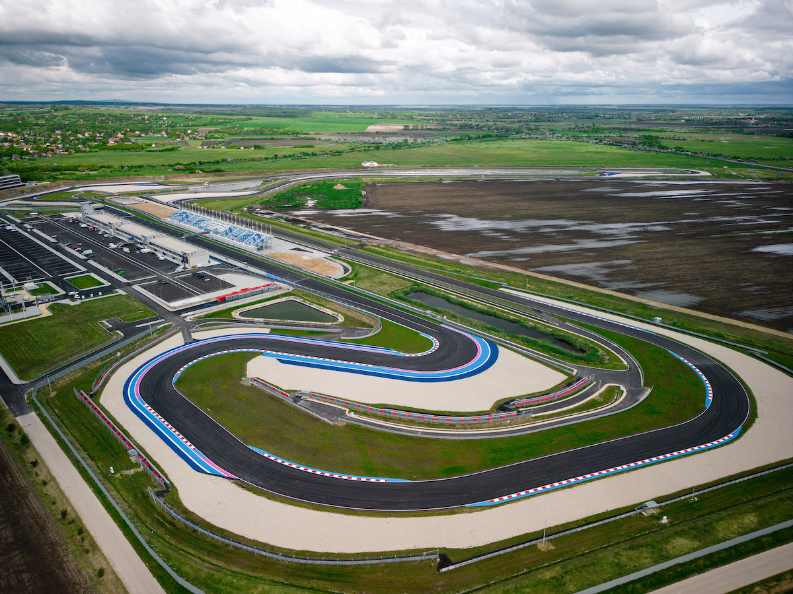
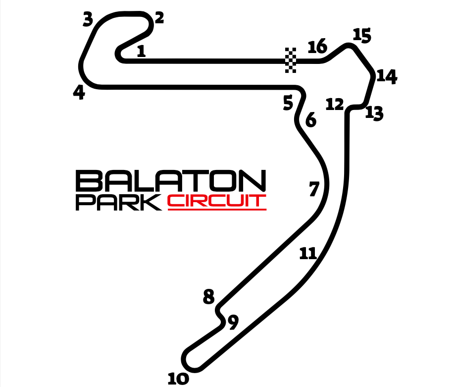
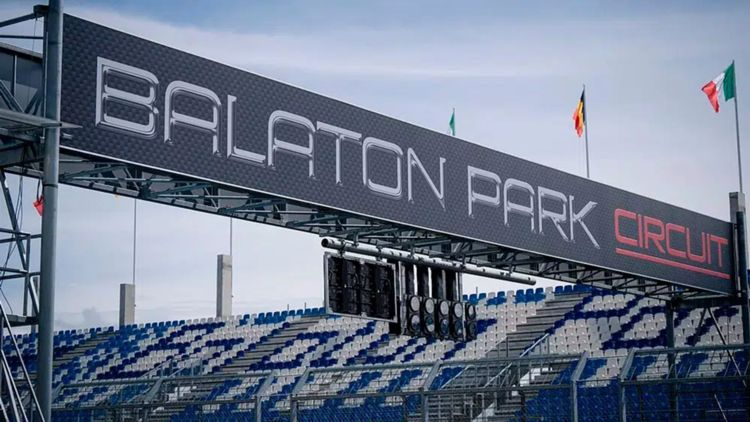

Longitud: 4115 metros
Anchura media: 15 metros
Ubicación: Balatonfőkajár, Hungría
Fecha: 2025-08-24 Hora: 14:00:00
Número de vueltas: 26
Patrocinador principal: Monster Energy
Marc Márquez
Fotografía 1

Fotografía 2

Fotografía 3
